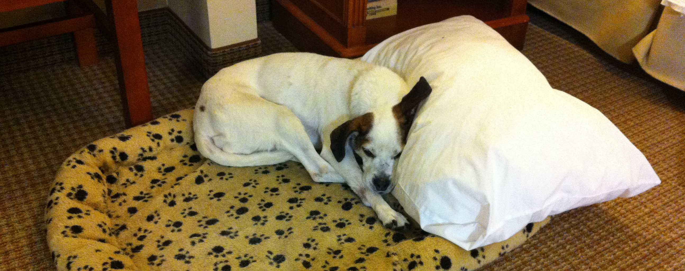
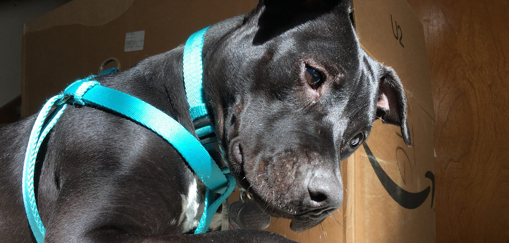

Additional Information

Gracie
This is Gracie! My wife and I adopted her from Happy Tales Humane rescue in Franklin, TN on September 29, 2006. She was roughly 4 years old at the time. Gracie is our travel buddy and comes with us wherever we go. Here she is at the Wingate hotel in Charlotte, NC for the Mustang 50th anniversary celebration. After a very brave and hard fight with cancer over 18 months, Gracie passed over the rainbow bridge in April 2016.

Luba
This is Luba! My wife and I adopted her from Do Over Dogs rescue in Broomfield, CO on May 7, 2016. Her exact age was unknown but she was roughly 13 weeks old at the time. She is the sweetest, most loving dog we've ever met, and her name (Люба) is Russian for love.